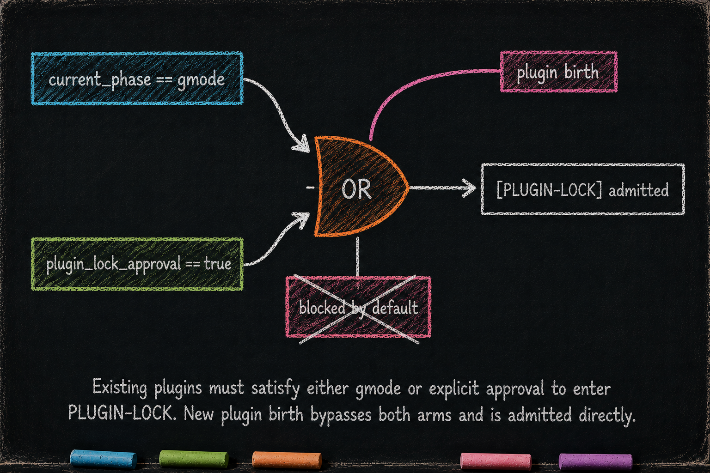

The Customization Guardrail
Essay 5.9 — The Always-On Digital Cortex, Part 9 of 9.
Essay 5.8 showed how single-concern plugins compose into the historian ratchet — the ceremony that forces re-narration before plugin code edits. This final essay covers the question that gates every plugin-code edit and every new-plugin birth in the first place: [PLUGIN-LOCK]. Editing an existing plugin’s logical surface, or creating a new plugin from scratch, both start by asking that question. The question itself is gated — it admits only in two specific contexts, and the gate is what keeps the substrate intact. ⓘ
The historian ratchet asks: have you re-read the plugin’s life before editing it? The customization guardrail asks something prior: are you in a context where any plugin-code work (editing OR creating) is even allowed?
For the architects in the audience. Especially the ones who plan to customize their own seed.
What it owns
The customization guardrail owns the gate on [PLUGIN-LOCK] admission. Two operations route through it:
- Editing an existing plugin’s code surface —
hooks/*.sh,scripts/*.sh,config.conf, and the plugin-level context required before any protectedtests/*.shedit. Test files then pass through[TEST-LOCK]one file at a time;data.jsonremains hidden state and mutates only through plugin-owned scripts. - Creating a new plugin —
[PLUGIN-LOCK] <new_name>triggers the birth branch inlock-manager.sh: template stamp, historian generation, baseline commit. Same gate; same admission requirement.
ⓘ
The gate does NOT cover the plugin’s soft/meta-cognitive learning surface — CLAUDE.md, docs/*.md, voice.xml (both hooks/voice.xml and scripts/voice.xml), and agents/*.md (subagent definitions, including the historian-*.md files). Those files can shape behavior, but they are not the testable logic surface PLUGIN-LOCK protects. They are free from [PLUGIN-LOCK] while still being governed by phase discipline: CONDENSE owns them as part of its waterfall meta-cognition step, tuning voice injections from phase-footer notes, refreshing historian definitions, and refining working-memory CLAUDE.md files. ⓘ
The decision rests on one fact: editing existing plugin code (or creating a new plugin that will start running code immediately) alters the substrate form that polices every other plugin’s discipline. One quiet regression deep inside a plugin’s hook can poison every dispatched subagent, every phase gate, every voice fire across the session. The gate’s role is to ensure plugin-code work only happens in contexts where the operator is deliberately doing code-level substrate work — not as a side effect of normal cycle activity. ⓘ
How it works — the OR-gate
The gate admits [PLUGIN-LOCK] on either of two conditions:
1. current_phase == "gmode" — the agent’s focused job is currently in gmode, the operator’s deliberate maintenance lane. The operator entered gmode via [GMODE] with a ≥100-word justification naming the work to be done. ⓘ
2. The focused job has plugin_lock_approval == true — a top-level boolean on the job object, set when the operator answered Approve job creation to a [JOB-APPROVE-CREATION] question proposed by the agent from CONDENSE. ⓘ
Either condition admits. Both failing produces a block with structured teach-text naming both admission routes. The gate’s logic is short — a few lines of bash in lock-manager.sh — but the architectural decision behind it is deeper than the code length suggests. ⓘ

Why both routes, not one
Each route covers a case the other can’t reach without contortion.
gmode is for ad-hoc work the operator initiates. The operator notices a problem with a plugin and decides to fix it right now. There’s no pre-existing job for this work; making one would be overhead for what may be a one-line fix. The operator enters gmode (a [GMODE] question with a ≥100-word justification), does the work, exits. The trigger is the operator’s noticing. ⓘ
User-approved jobs are for planned work the agent initiates. Any phase (OBSERVE / PLAN / EXECUTE / VERIFY) can notice that a customization to the plugin layer would help — a pattern that should harden into a plugin, a voice that keeps misfiring, a workflow the always-on layer doesn’t yet support. ⓘ
The noticing phase drops a note in its CLAUDE.md footer; CONDENSE’s waterfall step 3 consumes the note and fires [JOB-APPROVE-CREATION] <name> from CONDENSE. The user confirms; the new job is created with plugin_lock_approval=true; [PLUGIN-LOCK] admits inside that job for the duration of the customization work. The trigger is the agent’s noticing; the creation is CONDENSE’s responsibility. ⓘ
The two routes match the two natural triggers (operator-noticed vs agent-noticed) without forcing every soft/meta-cognitive tuning step through the same code-lock ceremony.
The propose-and-confirm flow
The [JOB-APPROVE-CREATION] route is where most customization happens, because it’s where the agent’s noticing meets the operator’s judgment. The flow:
1. Any phase notices a need. During OBSERVE / PLAN / EXECUTE / VERIFY, the agent identifies that a customization to the plugin layer would help — a pattern that should harden, a voice that keeps misfiring, a workflow the always-on layer doesn’t yet support. The noticing phase drops a note in its CLAUDE.md footer (a [PENDING-JOB] marker or free-form rationale). ⓘ
2. CONDENSE proposes via [JOB-APPROVE-CREATION] <name>. Job creation is CONDENSE’s responsibility. The question body names the proposed objective, the plugins that would be edited (or created), the rationale (which note from earlier phases surfaced the need), and the expected scope (single-cycle DEEP, multi-cycle, approximate effort). The phase-of-firing gate in question-capture.sh blocks the prefix outside CONDENSE — if any other phase tries to fire it, the agent gets a teach-voice pointing back to the footer-note channel. ⓘ
3. The user judges. Standard AskUserQuestion options: Approve job creation confirms; Redirect lets the user adjust scope before approval; Reject drops the proposal. The user holds the architectural decision; the agent holds the operational details. ⓘ
4. On approval, the Post handler creates the new job and flips its plugin_lock_approval flag. ⓘ
5. The agent focuses and activates the new job when ready to begin substrate work. The pending job sits in the data.json until the agent (or operator) decides to switch contexts. Inside the activated approved job, [PLUGIN-LOCK] admits without further questioning — the gate sees plugin_lock_approval=true on the focused job and admits the lock for both editing existing plugins AND creating new ones. ⓘ
What would break without it
Without the customization guardrail, plugin code edits and births would be admitted in any cycle, in any phase, by any job. That isn’t paranoia — it’s the failure mode of every agent design where the agent can rewrite the rules that constrain it without ceremony. A buggy hook can poison every subsequent tool call. A regressed test guard can let broken plugins through. A misnamed voice id can silently fail to coach the agent through a critical moment. A spurious new plugin can hijack hook events the operator didn’t authorize. The substrate’s integrity is what makes the rest of the always-on layer trustworthy; without the gate, that integrity dissolves whenever the agent is mid-cycle with broad write access. ⓘ
Worse: without a structured gate on code-level customization, substrate-code decisions get made ad-hoc, in the middle of work, under deadline pressure — exactly the situation where careful architectural judgment is hardest. The gate forces the customization decision into one of two deliberate moments: the operator entering gmode with a justification, or the user judging a [JOB-APPROVE-CREATION] proposal CONDENSE surfaced. Both moments slow the agent down, on purpose. Slowness is the point. ⓘ
What you would customize
The customization guardrail is the rare plugin-layer surface where the design assumes most architects will inherit, not rewrite. The two-route architecture is the architectural decision; the specific prefix names and voice wording are the surface knobs.
You would tune the proposal threshold. The current prototype waits for the agent’s own noticing — a pattern recurs, a voice keeps misfiring. Your seed may want a more aggressive proposer (every CONDENSE, list candidate plugin-improvements; reduce to one and propose) or a more conservative one (only propose after the user has expressed friction). The thresholds live in plugin code; the architectural fact (proposals come from agent noticing + user judging, with CONDENSE doing the asking) doesn’t move. ⓘ
You would rename the [JOB-APPROVE-CREATION] prefix if your operator vocabulary uses different words. The prefix is registered in question_discipline's PREFIX_REGISTRY as a single literal; the Post handler in job_core greps for the same string; the phase-of-firing gate in question-capture.sh matches the same literal. A consulting seed might prefer [ENGAGEMENT-AUTHORIZED] — every client engagement proposal stays structurally approved by a human before the agent begins scope-altering customization work, mirroring the firm’s existing engagement-letter discipline. A research seed might use [INVESTIGATION-PROTOCOL] — the lab director signs off on each new line of inquiry before the seed begins building its instrumentation. The mechanism is the architecture; the words are yours. ⓘ
Voice is the cheapest surface to tune. You would rewrite the gate’s block voice to match your operator’s reading level. The current voice has a 3-part teach: WHY (substrate edits matter) + WHAT TO DO (the two routes) + EXPECTED STATE. Your seed may want a shorter voice for an architect-level operator who already knows the why, or a longer one for a new operator still learning the surface. The voice lives in voice.xml — and editing voice.xml doesn’t require [PLUGIN-LOCK] itself, because voice is a soft learning surface and CONDENSE owns voice tuning as a routine meta-cognition step. ⓘ
You would extend the approval-flag granularity. The current design has one top-level flag (plugin_lock_approval). Your seed may want finer granularity — a flag per concern, or per plugin family. The schema is flat and extensible: adding a flag is a schema extension + a new --hook approve-X command. ⓘ
What you would NOT do is remove the gate. The gate is what makes the architecture safely modifiable. A seed that admits PLUGIN-LOCK in any context is a seed that will eventually corrupt its own substrate, usually under deadline pressure when the architect’s judgment is weakest. ⓘ
What the gate teaches
The customization guardrail is the architectural conclusion of the prior essays in this series. The always-on plugin layer holds the agent’s reflexes; the substrate holds its working memory; the historian ratchet forces re-narration before edits; the gate forces deliberate context before any plugin-code edit (or new-plugin birth) happens at all. Each layer adds a discipline; the gate is the one that turns the system into something safely modifiable by you — not by the original developer, by you, the operator who installed the seed last week or last month or last year. ⓘ
That is the agent-developer-user → agent-user collapse made operational. The agent proposes customization. You judge it. The substrate enforces the discipline that keeps your judgment safe. No developer in the loop. And the canonical reference the seed itself consults when reasoning about its own design is this nine-essay series — plus Essay 6, 7, 8 and the .claude/knowledge/ topic files you cultivate as you customize. The PowerPoint of seed agents lives here.
Essay 5.9 — The Always-On Digital Cortex, Part 9 of 9.
Previous: Essay 5.8 — The Historian Ratchet — composed ceremony from three single-concern plugins. Next: Essay 6.1 — Phasic Foundation — opens The Markov Phasic Brain (10-part series): action space → Markov brain, why phases.
Comments